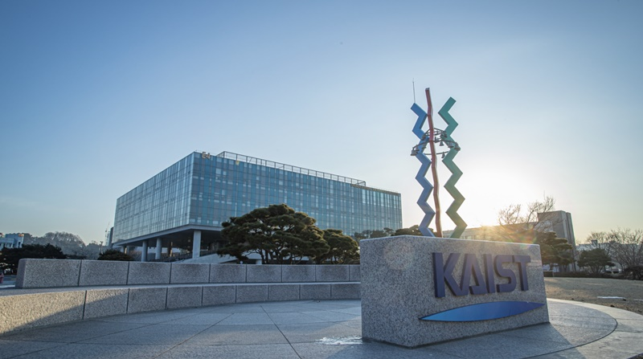
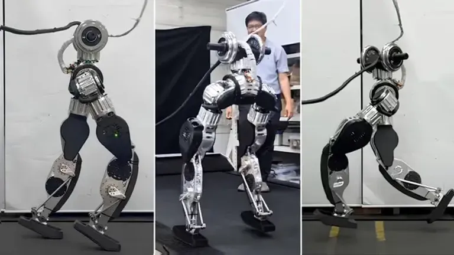

KAIST에 오신 것을 환영합니다
|

|
|
KAIST 대학교 한국과학기술원 |
|
|

| 주요뉴스 |
최신 로봇 기술 혁신 KAIST 연구팀이 방금 국제 부문에서 상을 수상했습니다 휴머노이드 로봇공학 글로벌 수준에서. 게시 날짜 : 국제 학생 입학국제 장학금 경로 등록이 시작되었습니다. 반드시 확인하십시오 문서 요구 사항 등록하기 전에. 게시 날짜 : |